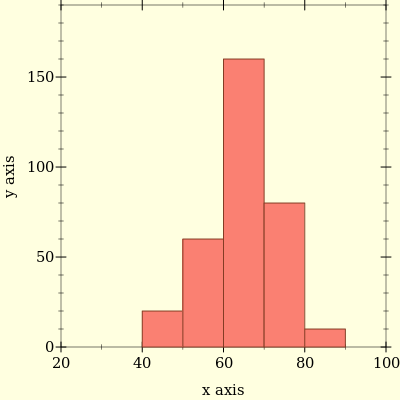

As part of production monitoring it is standard practice to measure p95, p99 latencies. We also want to query these metrics over dynamic time range. What is p99 latency over last 3 hours? What is p99 latency over last 5 minutes?
One option is calculate quantiles at client using statsite which will calculate configured quantiles for timer metrics over flush interval and then send data to monitoring servers for query. Quantiles statsite calculates is approximate to reduce memory footprint of statsite library. There are other issues with this approach besides quantiles being approximate.
Reason for last two is there is no meaningful way to combine individual quantiles.
In following discussions I will assuming that quantiles are calculated on servers of monitoring stack. To accurately calculate quantities we can send all latencies data to server from application instances making heavy demand on storage and computation (at query time) on monitoring systems. This is unacceptable. To avoid it modern monitoring systems use quantile sketches which can calculate quantiles values within some error bounds by storing summary of data.
Idea behind quantile sketching is clients will send out latency summary bucketed into bins with each bin measuring how many times latency falls within bounds of bucket. Using above data it is possible to find out in which bucket queried quantile will fall. After which linear interpolation can give point estimate of quantile.
Let’s go through steps to find p95 from below histogram

floor(q*(n-1))+1 is (Lower) q-quantile. Plugging values in formula we get p95 should be 313th entry.Querying over dynamic time range and over multiple instances requires mergeability - given multiple quantile sketches it should be possible to combine them to get overall quantiles. Using histograms mergeability requires bin boundaries are same so we can add corresponding bin counters to get combined quantile sketch.
In example above, point estimate of p95 is 79.12. Since it is estimate, it is better to get error bounds. As we don’t have any insight into bins, it is possible that true p95 lies anywhere between 70 (exclusive) and 80. Relative error can be 13% when true p95 is near 70 and 1% when it is 80. Relative error of p95 is bounded above by 13%. Following table shows what is maximum relative error (in percentage) across quantiles which fall within that bucket. As you can see maximum relative error varies across buckets. It is possible to design buckets such that maximum relative error is fixed. If buckets are log-based with 1.125 multiplier ((1,1.125], (1.125,(1.125)^2] ...) then maximum relative error will be 12.5% across buckets.
| Bucket | Max Relative Error % |
|---|---|
| 40-50 | 25 |
| 50-60 | 20 |
| 60-70 | 16 |
| 70-80 | 14 |
| 80-90 | 12 |
Prometheus’s default bucket configuration can be seen here. Notice that last bucket upper bound is Inf. If quantile falls into last bucket, it will return 10.0 as quantile estimate, lower bound of last bucket. It is not possible to linear interpolate in last bucket as upper bound is Inf. As a result it is hard to find maximum relative error for last bucket. VictoriaMetrics divides [10^(-9),10^18] range into log based buckets with 10^(1/18) multiplier [github]. This gives ability to capture wide range of observation (nanoseconds in time scale, million of terabytes in storage scale) with 13.6% worst case relative estimate of quantile. HdrHistogram, DDSketch and Circllhist are other quantile sketches which are used in industry.